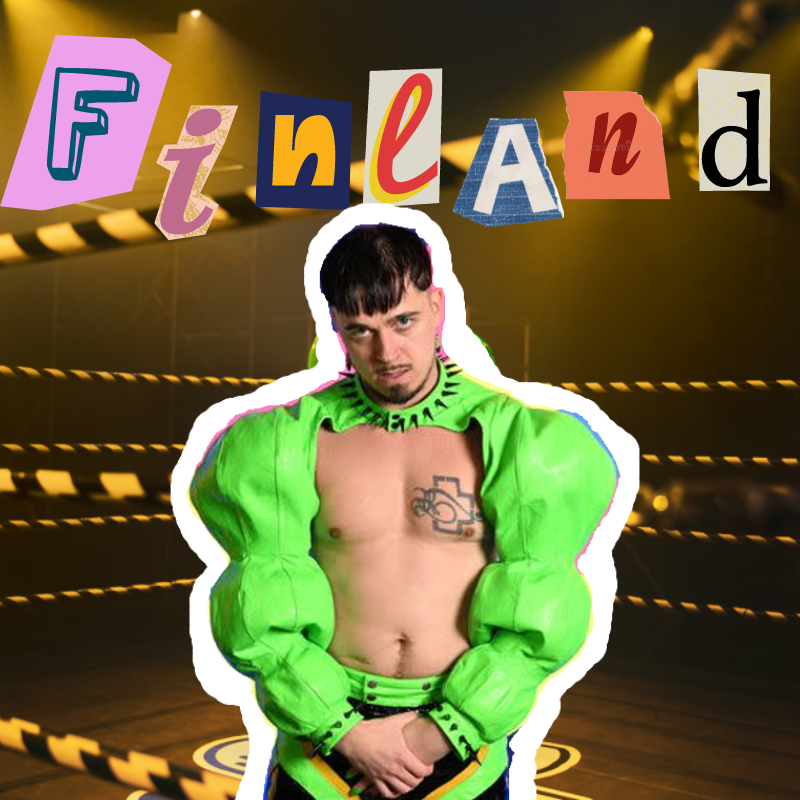
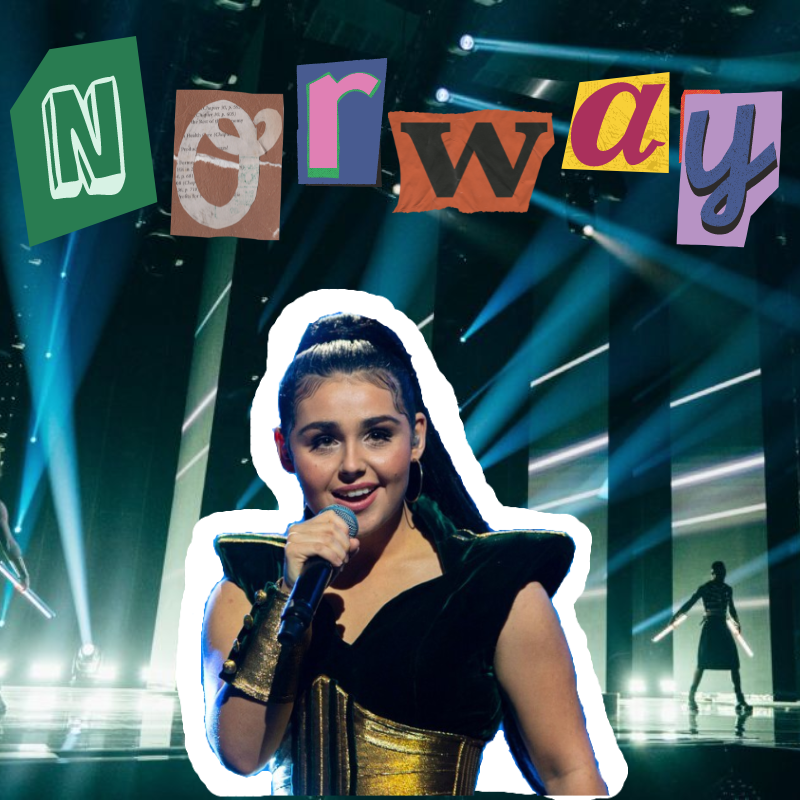
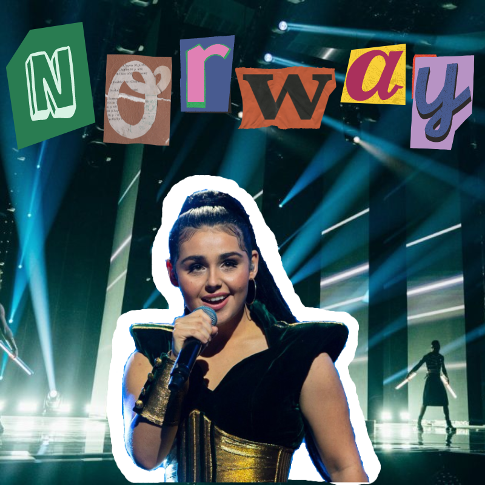

A Dive In The Top 5 Of Eurovision 2023

 

Eurovision is a song contest that was started in 1956 and has been held annually ever since. Each country involved sends a representative to perform. This representative is usually selected during a country's national finals, where a jury and the audience of the specific country vote for their favourite song and performance. The winner of the previous year is usually the country that hosts the show, but because of the ongoing war in Ukraine, the country whose representatives won Eurovision 2022 chose Liverpool as the host city instead this year. This year had a total of 37 countries participating, which is less than usual due to the high costs of sending a representative and concerns with global warming and carbon emissions involved with sending a performer. This show is a celebration of European culture, music, and pride, and the performances are nothing short of incredible.
Before the finals of Eurovision, there are two semi-finals that take place. These occur 4 and 2 days before the finals, respectively, and every single country that competes in Eurovision except for the Big 5 must compete in these semi-finals for a spot in the finals. In the past, the jury and the audience used to have a 50/50 split on the points for the semi-finals. However, this year, the production behind Eurovision got rid of jury votes for the semi-finals. On the other hand, who are the Big 5? Well, the Big 5 consists of Germany, France, the United Kingdom, Italy, and Spain. These countries contribute the most financially to the production of Eurovision and bring in the most viewers, so they automatically get a pass to the finals without having to compete in the semi-finals. Unfortunately, the side effect of this is that countries in the Big 5 often do poorly in the competition..
First, there is the jury system. Each country involved in Eurovision has a small jury, usually of a few people, that decides where they would like to allocate their country's points. A country can give at most 12 points, followed by 10, and then 8 all the way to 1. Secondly, there is the televote. This is where citizens can vote for their favourite songs, with a maximum of 20 votes per phone number. This year, they added a new "Rest of the World" voting system. This allows anyone who lives outside of Europe to vote as well, with their total votes having the same weight as those of one European country. This is to expand the international possibilities of the show, with the televote also following the same 12, 10, 8-1 points system as the jury.
Before the show, I looked at many online predictions on who was going to win, and I found that a large majority of people were rooting for Sweden to win. I figured this was due to the performer's winning Eurovision 2012 performance. However, I also found a cult following surrounding Finland's entry. When I first listened to it, I didn't really enjoy it or understand the hype that was being built. But over time, I slightly understood why this song got as many televote points as it did. Personally, I am surprised to see France's and Portugal's performances so low on the list. Before the show, I believed they would be frontrunners in the competition. Furthermore, I was shocked to see Croatia get as many points as it did. I understand that not all performances have to be serious, but the whole show that the performers put on was quite erratic and hard to follow. In the semi-finals, I think that Georgia should've qualified over Poland. Overall, this year brought many talented performers and performances, and I cannot wait to see what's in store next year.